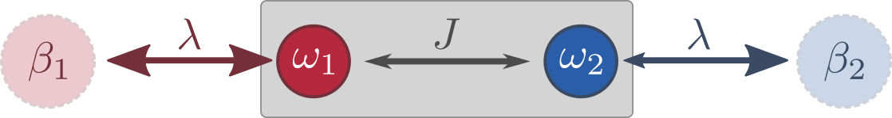

Open Bose Dimer
A nice example to illustrate how one can use KadanoffBaym.jl to study open systems is the Bose dimer depicted below.
A Jupyter notebook for this example is available in our examples folder.

It consists of two bosonics modes $\omega_{1,2}$ (you can imagine two single-mode cavities at different frequencies), which are coupled with strength $J$. Additionally, each mode is coupled to its own reservoir at inverse temperature $\beta_{1,2}$, respectively. Such a system is described by the master equation
\[\begin{align*} \partial_{t} \hat{\rho}=-i\left[\hat{H} \hat{\rho}-\hat{\rho} \hat{H}^{ \dagger}\right] + \lambda\sum_{i=1}^L \left[(N_i + 1)\hat{a}^{\phantom{\dagger}}_i \hat{\rho} \hat{a}^{\dagger}_i + N_i \hat{a}^{\dagger}_i\hat{\rho} \hat{a}^{\phantom{\dagger}}_i \right] \end{align*}\]
for $[\hat{a}^{\phantom{\dagger}}_i, \hat{a}^{\dagger}_i]=1$, $i=1, ..., L$ and $L=2$. The $N_i=1/(e^{\beta_i \omega_i}-1)$ denote the thermal occupations of the reservoirs. The in this case non-Hermitian Hamiltonian is given by
\[\begin{align*} \hat{H}=\sum_{i=1}^L (\omega_{i}-i \lambda (N_i + 1/2)) \hat{a}^{\dagger}_i \hat{a}^{\phantom{\dagger}}_i. \end{align*}\]
The bosonic lesser and greater Green functions are
\[\begin{align*} \left[\boldsymbol{G}^<(t, t')\right]_{ij} &= G^<_{ij}(t, t') = -i\left\langle{\hat{a}_j^{{\dagger}}(t')\hat{a}_i^{\phantom{\dagger}}(t)}\right\rangle, \\ \left[\boldsymbol{G}^>(t, t')\right]_{ij} &= G^>_{ij}(t, t') = -i\left\langle{\hat{a}_i^{\phantom{\dagger}}(t)\hat{a}_j^{{\dagger}}(t')}\right\rangle. \end{align*}\]
For convenience, we also introduce the (anti-) time-ordered Green functions
\[\begin{align*} G^{T}_{ij}(t, t') &= \Theta(t - t') G^>_{ij}(t, t') + \Theta(t' - t) G^<_{ij}(t, t'), \\ G^{\tilde{T}}_{ij}(t, t') &= \Theta(t - t') G^<_{ij}(t, t') + \Theta(t' - t) G^>_{ij}(t, t'). \end{align*}\]
With the help of these, we can express the "vertical" equations of motion compactly:
\[\begin{align*} \partial_t \boldsymbol{G}^<(t, t') &= -i \boldsymbol{H} \boldsymbol{G}^<(t, t') + \lambda \operatorname{diag} (N_1, ..., N_L) \boldsymbol{G}^{\tilde{T}}(t, t') , \\ \partial_t \boldsymbol{G}^>(t, t') &= -i \boldsymbol{H}^\dagger \boldsymbol{G}^>(t, t') - \lambda \operatorname{diag} (N_1 + 1, ..., N_L + 1) \boldsymbol{G}^{{T}}(t, t') , \end{align*}\]
where $\boldsymbol{H} = \operatorname{diag}(\omega_{1}- i\lambda (N_1 + 1/2), ..., \omega_{L}- i\lambda(N_L + 1/2))$. As in our previous example, we also need the equations in the "diaognal" time direction, which in the present case become
\[\begin{align*} \partial_T {G}_{{ij}}^<(T, 0)_W &= -i \left[\boldsymbol{H} \boldsymbol{G}^<(T, 0)_W - \boldsymbol{G}^<(T, 0)_W \boldsymbol{H}^\dagger\right]_{ij} \\ &+ \frac{i\lambda}{2} (N_i + N_j) ({G}_{{ij}}^<(T, 0)_W + {G}_{{ij}}^>(T, 0)_W), \\ \partial_T {G}_{{ij}}^>(T, 0)_W &= -i \left[\boldsymbol{H}^\dagger \boldsymbol{G}^>(T, 0)_W - \boldsymbol{G}^>(T, 0)_W \boldsymbol{H}\right]_{ij} \\ &- \frac{i\lambda}{2} (N_i + N_j + 2) ({G}_{{ij}}^<(T, 0)_W + {G}_{{ij}}^>(T, 0)_W), \end{align*}\]
where the subscript $W$ again indicates Wigner coordinates.
Translating all of this into code is now straightforward! We start by defining the Green functions and their initial conditions:
using KadanoffBaym, LinearAlgebra
# Lattice size
L = 2
# Allocate the initial Green functions (time arguments at the end)
GL = GreenFunction(zeros(ComplexF64, L, L, 1, 1), SkewHermitian)
GG = GreenFunction(zeros(ComplexF64, L, L, 1, 1), SkewHermitian)
# Initial condition
GL[1, 1] = -im * diagm([0.0, 2])
GG[1, 1] = -im * I(2) + GL[1,1]Then we assign all of the parameters we need:
# Non-Hermitian Hamiltonian
ω₁ = 2.5
ω₂ = 0.0
J = pi / 4
γ = 1
N₁ = 1.
N₂ = 0.1
H = [ω₁ - 0.5im * ((N₁ + 1) + N₁ * γ) J; J ω₂ - 0.5im * ((N₂ + 1) + N₂ * γ)]As the last step, we write down the equations of motion:
# Right-hand side for the "vertical" evolution
function fv!(out, _, _, _, t, t′)
out[1] = -1.0im * (H * GL[t, t′] + [[1.0im * N₁ * γ, 0] [0, 1.0im * N₂ * γ]] * GL[t, t′])
out[2] = -1.0im * (adjoint(H) * GG[t, t′] - 1.0im * [[(N₁ + 1), 0] [0, (N₂ + 1)]] * GG[t, t′])
endObserve how we have converted the (anti-) time-ordered Green functions $G^{T}, G^{\tilde{T}}$ into lesser and greater functions by explicitly using the fact that we are operating on the $t>t'$ triangle of the two-time grid $(t, t')$. By combining fv! with its adjoint as before, we also obtain the "diagonal" equations as
# Right-hand side for the "diagonal" evolution
function fd!(out, _, _, _, t, t′)
out[1] = (-1.0im * (H * GL[t, t] - GL[t, t] * adjoint(H)
+ 1.0im * γ * [[N₁ * (GL[1, 1, t, t] + GG[1, 1, t, t]), (N₁ + N₂) * (GL[2, 1, t, t] + GG[2, 1, t, t]) / 2] [(N₁ + N₂) * (GL[1, 2, t, t] + GG[1, 2, t, t]) / 2, N₂ * (GL[2, 2, t, t] + GG[2, 2, t, t])]])
)
out[2] = (-1.0im * (adjoint(H) * GG[t, t] - GG[t, t] * H
- 1.0im * [[(N₁ + 1) * (GL[1, 1, t, t] + GG[1, 1, t, t]), (N₁ + N₂ + 2) * (GG[2, 1, t, t] + GL[2, 1, t, t]) / 2] [(N₁ + N₂ + 2) * (GG[1, 2, t, t] + GL[1, 2, t, t]) / 2, (N₂ + 1) * (GL[2, 2, t, t] + GG[2, 2, t, t])]])
)
endCalling the solver is again a one-liner:
sol = kbsolve!(fv!, fd!, [GL, GG], (0.0, 32.0); atol=1e-6, rtol=1e-4)By importing Julia's FFTW and Interpolations packages, we can also obtain the Wigner-transformed Green functions.
using FFTW, Interpolations
function wigner_transform_itp(x::AbstractMatrix, ts::Vector; fourier = true, ts_lin = range(first(ts), last(ts); length = length(ts)))
itp = interpolate((ts, ts), x, Gridded(Linear()))
return wigner_transform([itp(t1, t2) for t1 in ts_lin, t2 in ts_lin]; ts = ts_lin, fourier = fourier)
end
ρ_11_wigner, (taus, ts) = wigner_transform_itp((GG.data - GL.data)[1, 1, :, :], sol.t; fourier=false)
ρ_11_FFT, (ωs, ts) = wigner_transform_itp((GG.data - GL.data)[1, 1, :, :], sol.t; fourier=true)If you want to see plots of all the results, you can find those in our corresponding Jupyter notebook.